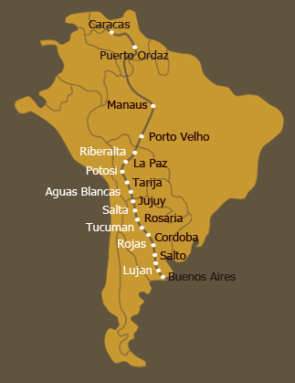

 Argentina, Salta : 5th August 2002
Argentina, Salta : 5th August 2002
Miss M and I left later that morning with only a few of our belongings with us. The rest had been sent on with Tusa to the farm. Our next stop was Metan. On the way though, we went up a steep hill and somehow I twisted my leg and no matter how hard I tried, I couldn't stop limping. Miss M was very concerned. She tried to get a vet out but with no success and as we were in the middle of two towns, Miss M knew that we had to go either way before it got dark. So it was all hop-along-cassidy for me until we reached Metan. Because of all the limping Miss M and I went really slow and we also stopped a lot so when we arrived on the farm of Magdalena and Marcelino Sierra and their boys, it was already dark. It was a cold night and later that evening Miss M and Magadalena came out to put a duvet on my back. I appreciated the intention but unfortunately it wasn't secured very well so during the night and after a few movements on my side, it fell to the ground. The next day was bright and sunny though and it wasn't long before I forgot about the chilly wind that went right through my bones the previous night.
Miss M thoroughly enjoyed her stay on the farm and she and Magdalena had lots to chat about. Magdalena speaks perfect English so of course neither of them made an effort to try and get Miss M to improve her Castellano (Spanish)! The vet came out to look at my leg (he treated the wrong one though!) and Miss M also got some vitamins in town for me to keep me going. So the night before we had to leave, she played "vet" and injected this thick black liquid into my neck- on both sides. I could sense Miss M was a bit nervous and this made me a bit edgy as well so when I felt the first prick I started moving around - spurting some of the liquid onto her clothes. The next day I had a little lump on the side of my neck so I guess I'd better stand still the next time. Hopefully Miss M will also have a steadier hand by then….
We left Metan on a cold and windy day but Miss M didn't mind as we followed the curvy road, going up and down with scenic mountains all around us. Unfortunately though I started to feel a pain in my leg again and this time it was much worse. Miss M stopped every now and then to rub cream on my leg but things didn't improve. Going downhill especially was very difficult and at one point I just simply stopped. Miss M realised that we couldn't go on and felt very frustrated. I spotted the tears in her eyes and I wished so much that I wasn't such a wimp and that we could continue. Miss M made a phone call to Mike Leach who lives in Mendoza and his advice was to stop and to get Mise up to the farm as well. Miss M was so disappointed but she also knew that it was the most sensible thing to do. There was a lot of hassle and drama to get a suitable horse-box and eventually Mike's brother, Anthony was so kind and arranged for one of their trucks to come and pick Miss M and I up.
 Miss M and I both fell in love with Los Lapachos straight away (the farm is called after a tree with the same name that has mostly bright pink flowers but these could also be yellow or white) and it is truly a spectacular farm. Well, I couldn't believe my eyes when I spotted my friend Tusa in the distance and he kept calling for me until we stood again face-to-face. I was happy to see him but it was also a difficult time of the month for me so he had a bit of a confused look on his face when I just gave him a friendly nod and walked off to munch on some alfalfa. Miss M in the meantime, was met by Caroline & Richard Leach and they welcomed her into their house with open arms. Miss M stayed in one of the guest rooms attached to the farmhouse (Los Lapachos is open to tourists & visitors who wish to have a taste of true Estancia life with wonderful food, wine and company) and she loved the big spacious rooms with the wide wooden windows, cool tiles and pretty views.
Miss M and I both fell in love with Los Lapachos straight away (the farm is called after a tree with the same name that has mostly bright pink flowers but these could also be yellow or white) and it is truly a spectacular farm. Well, I couldn't believe my eyes when I spotted my friend Tusa in the distance and he kept calling for me until we stood again face-to-face. I was happy to see him but it was also a difficult time of the month for me so he had a bit of a confused look on his face when I just gave him a friendly nod and walked off to munch on some alfalfa. Miss M in the meantime, was met by Caroline & Richard Leach and they welcomed her into their house with open arms. Miss M stayed in one of the guest rooms attached to the farmhouse (Los Lapachos is open to tourists & visitors who wish to have a taste of true Estancia life with wonderful food, wine and company) and she loved the big spacious rooms with the wide wooden windows, cool tiles and pretty views.